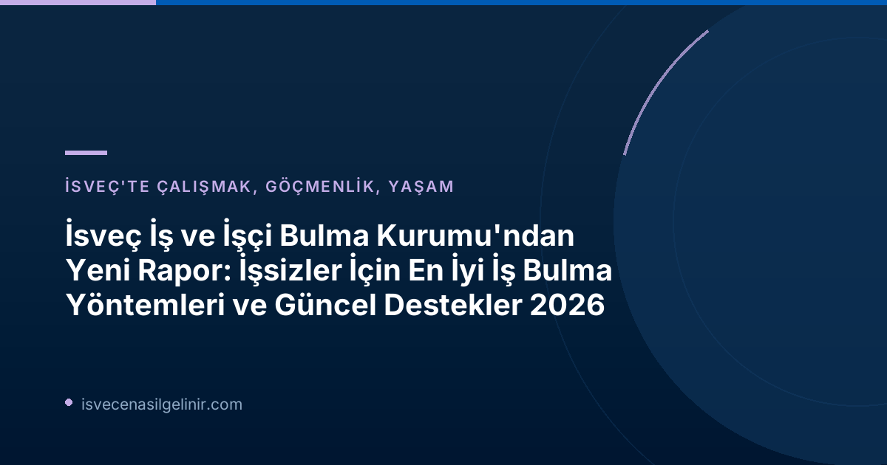

İşsizler İçin En Etkili Yöntemler Neler?
Arbetsförmedlingen'in "İşe Götüren Çalışmalar" başlıklı kısa raporu, işgücü piyasasında dezavantajlı konumda olan bireylerin istihdam edilmelerini kolaylaştıran beş temel faktörü öne çıkarıyor:
| Etkili Yöntem | Açıklama |
|---|---|
| İş Piyasası Eğitimleri (Arbetsmarknadsutbildningar) | İşgücü piyasasının ihtiyaç duyduğu alanlarda beceri ve bilgi kazandıran özel eğitim programları. |
| Staj (Praktik) | Gerçek iş ortamında deneyim kazanma ve iş bağlantıları kurma fırsatları sunan programlar. |
| Sübvanse Edilmiş İstihdam (Subventionerade Anställningar) | İşverenlerin, işgücü piyasasından daha uzak bireyleri işe almalarını teşvik eden devlet destekli istihdam modelleri. |
| Arbetsförmedlingen Danışmanlarıyla Sıkı Temas | Kişiye özel rehberlik, iş arama stratejileri ve kariyer danışmanlığı için düzenli görüşmeler. |
| İşverenlerle Yakın Temas | İş arayanlar için doğrudan işveren bağlantıları ve işe yerleştirme süreçlerinin hızlandırılması. |
Arbetsförmedlingen işgücü piyasası analisti Anders Böhlmark, "İş arayanlara destek ile aktif işveren çalışmalarını birleştiren çabalar, yalnızca iş arayanlara yönelik çabalardan genel olarak daha iyi sonuçlar verir," diyerek işverenlerle doğrudan iletişimin kritik rolünü vurguluyor.
İş Piyasası Eğitimleri (Arbetsmarknadsutbildningar) ile Geleceğinizi Şekillendirin
İsveç'te işgücü piyasasında aranan niteliklere sahip olmak için iş piyasası eğitimleri büyük bir fırsat sunar. Bu eğitimler, belirli sektörlerdeki uzmanlık açıklarını kapatmaya yönelik olup, katılımcıların hızla iş bulmalarına yardımcı olur. Eğitimler genellikle pratik odaklıdır ve mezunları doğrudan istihdama yönlendirir.
Staj (Praktik) Fırsatlarıyla İş Deneyimi Kazanın
Staj programları, teorik bilgilerinizi gerçek bir çalışma ortamında uygulama ve sektörle tanışma imkanı sunar. İsveç'te iş arayanlar için staj, hem değerli bir deneyim hem de potansiyel bir iş kapısıdır. İşverenler, stajyerlerin performansını değerlendirerek, uygun gördükleri kişilere kalıcı iş tekliflerinde bulunabilirler.
Sübvanse Edilmiş İstihdam (Subventionerade Anställningar) Nedir?
Sübvanse edilmiş istihdam, işverenlere, işgücü piyasasına entegrasyonda zorluk yaşayan bireyleri işe almaları halinde devlet tarafından maaş desteği sağlanan bir modeldir. Bu sayede hem işverenler nitelikli eleman açığını kapatma fırsatı bulur hem de iş arayanlar iş deneyimi kazanarak uzun vadeli istihdama adım atarlar. Bu programlar, özellikle genç işsizler ve uzun süreli işsizler için önemli bir köprü görevi görür.
Arbetsförmedlingen'den Güncel Değişimler ve Destekler 2026
Arbetsförmedlingen, işsizlerin istihdam edilebilirliğini artırmak amacıyla sürekli olarak hizmetlerini geliştirmektedir. Kurumun devam eden dönüşüm çalışmaları kapsamında, gelecekte iş arayanlar için daha etkili ve iş odaklı destekler sunulması hedefleniyor.
Fiziksel Görüşmelerin Gücü ve Yükselişi
Rapor, iş arayanlarla yapılan fiziksel görüşmelerin önemine dikkat çekiyor. Ocak-Nisan 2026 döneminde Arbetsförmedlingen tarafından gerçekleştirilen 114.000 fiziksel görüşme, bir önceki yılın aynı dönemine göre %20'den fazla bir artışı temsil ediyor. Bu artış, kurumun kişiye özel danışmanlık ve rehberlik hizmetlerine verdiği önemi gösteriyor.
İsveç Vatandaşlık Süreciyle İlgili Merak Ettikleriniz Mi Var?
İsveç'te kalıcı olmak ve vatandaşlık almak mı istiyorsunuz? Süreç, gereklilikler ve İsveç Vatandaşlık Sınavı hakkında detaylı bilgiye sverigemedborgarskapsprov.com adresinden ulaşabilirsiniz. Uzman rehberliğinde başvurunuzu şimdi hazırlayın!
İşverenlerle Güçlendirilmiş Ortaklıklar
Christina Olsson Bohlin, Arbetsförmedlingen Değerlendirme Birimi başkanı, işverenlerin işgücü piyasasından daha uzak olan bireyleri işe almalarının önemini vurgulayarak, "Daha fazla işveren, iş piyasasından daha uzak olan kişileri sübvanse edilmiş istihdam gibi yollarla işe almaya istekli olursa, hem bireyler hem işverenler hem de genel olarak toplum için bir kazanç olacaktır," ifadelerini kullanmıştır. Bu yaklaşım, işverenlerin nitelikli eleman ihtiyaçlarını karşılarken, toplumun genel refahına da katkıda bulunmayı amaçlamaktadır.
Başarılı Olmak İçin İpuçları ve Tavsiyeler
- Arbetsförmedlingen ile Yakın Temas Kurun: Danışmanlarınızla düzenli olarak görüşmek, size özel iş arama stratejileri geliştirmenize ve uygun programlara yönlendirilmenize yardımcı olacaktır.
- Eğitim ve Gelişime Açık Olun: İş piyasası eğitimleri ve kurslar aracılığıyla becerilerinizi güncel tutmak ve yeni alanlara yönelmek iş bulma şansınızı artıracaktır.
- Ağınızı Genişletin: Sektör etkinliklerine katılın, profesyonel ağlar oluşturun ve işverenlerle doğrudan bağlantı kurmaktan çekinmeyin. LinkedIn gibi platformları aktif olarak kullanın.
- Özgeçmişinizi ve Motivasyon Mektubunuzu Optimize Edin: Başvurularınızda İsveç pazarının beklentilerine uygun, güçlü ve etkileyici belgeler kullanın.
- İsveççe Dil Bilginizi Geliştirin: İsveççe yeterliliği, birçok iş pozisyonu için kritik öneme sahiptir. Dil kurslarına katılarak veya pratik yaparak bu becerinizi geliştirin.
Rapor Hakkında Ek Bilgiler
Arbetsförmedlingen'in yayınladığı bu kısa raporun resmi adı "Kortrapporten Insatser som leder till jobb" olup, işsizler için en iyi sonuçları veren iş piyasası politikaları hakkındaki en son araştırmaları özetlemektedir.
Sonuç
İsveç İş ve İşçi Bulma Kurumu'nun 2026 raporu, işsizlikle mücadelede bireysel çabaların yanı sıra, kurumsal desteklerin ve işverenlerle işbirliğinin ne kadar önemli olduğunu bir kez daha kanıtlamıştır. Bu rehberdeki bilgileri ve tavsiyeleri uygulayarak, İsveç'teki iş arama yolculuğunuzda daha başarılı olabilir ve istihdam piyasasına güvenle adım atabilirsiniz. Unutmayın, doğru stratejiler ve kararlılıkla hedeflerinize ulaşmak mümkündür.
Referanslar:
İsveç'te İş Bulma Yolculuğunuza Başlayın!
Arbetsförmedlingen'in en güncel raporu ışığında, İsveç'te iş bulma şansınızı artırmak için atmanız gereken adımları öğrendiniz. Yeteneklerinizi geliştirin, ağınızı genişletin ve doğru desteklerle hedeflerinize ulaşın.